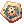
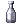

Verus Daily Quests
Jump to navigation
Jump to search
All of the Verus dailies require you to complete the Joining Phantasmagorica's Excavation Team quest.
Passage Cleaning
| Requirements | |
|---|---|
| Base Level: | 140 |
| Starting Point: | verus04 179/165 |
| Prerequisite(s): | Joining Phantasmagorica's Excavation Team |
| Rewards | |
| Experience: | 37,500,000 (Base) and 25,000,000 (Job) |
- Talk to Manager Michelle (
ver_eju 114/40) or Commander Louis (select About cleaning the tunnel,verus04 179/165) to receive the quest. - Go in the tunnel from Verus > right-side map.
- Kill 10 Recon Robot.
- Turn in the quest to either Manager Michelle or Commander Louis.
Eliminating Risks
| Requirements | |
|---|---|
| Base Level: | 140 |
| Starting Point: | verus04 179/165 |
| Prerequisite(s): | Joining Phantasmagorica's Excavation Team |
| Rewards | |
| Experience: | 37,500,000 (Base) and 25,000,000 (Job) |
- Talk to Commander Louis in Verus (
verus04 179/165) and select About monster subjugation. - You have to kill 15 Repair Robots and 15 Explorer Robots. These are found in verus03, which can be accessed from the map above Verus.
- After you've killed enough monsters, return to Commander Louis and ask again about monster subjugation.
Core Collection
| Requirements | |
|---|---|
| Base Level: | 140 |
| Starting Point: | verus04 144/193 |
| Prerequisite(s): | Joining Phantasmagorica's Excavation Team Becoming an Atnad Member |
| Rewards | |
| Experience: | 37,500,000 (Base) and 25,000,000 (Job) |
- Speak with Ian Atnad (
verus04 144/193) and select About the excavation. Accept his request. - Kill robots in Verus Central Square (verus03). They now have a chance of dropping a  Power Control Device.
- Once you've collected 20, go back to Ian and turn in the quest for your reward.

Police Chief Kesler's Request
| Requirements | |
|---|---|
| Base Level: | 140 |
| Starting Point: | verus04 133/212 |
| Prerequisite(s): | Joining Phantasmagorica's Excavation Team |
| Rewards | |
| Experience: | 7,500,000 (Base) per officer Total 30,000,000 (Base) |
- Talk with Police Chief Kesler (
verus04 133/212) and use Is there anything I can do to help?. Accept his request. - This quest is now divided into four parts, you cannot do these at the same time.
You are not required to complete any of them, however each completed sub quest will reward you with more exp. - Return to Police Chief Kesler once you've met with all the other Police Officers.

Police Officer Piffs
- Officer Piffs is found at
verus04 202/258. - He will ask you to collect 10
 Collected Medicinal Herbs.
Collected Medicinal Herbs. - These are found from Thickets around the map (verus04).
- Once you've gathered enough, go back to Officer Piffs.

Police Officer Gerev
- Officer Gerev is found at
verus03 116/36. - He will ask you to investigate 10 traps (marked as ???) which are find on the ground throughout the map. These were set by the Doom Prayers.
- After you've found 10 traps, go back to Officer Gerev.

Police Officer Seiden
- Officer Seiden is found at
verus03 81/241. - He is worried that the stones the Doom Prayers threw at them may hurt other people. You must gather 10 of them (they're found talking to the ???).
- Once you've gathered enough, go back to Officer Seiden.

Police Officer Salgran
- Officer Salgran is found at
verus03 36/113. - The Doom Prayers have been doing some illegal promotion, Salgran wants you to remove the leafletes.
- Kill 10 Illegal Promotion mob (they are hard to see).
- Once you've killed enough, go back to Officer Salgran.
New Power Source
| Requirements | |
|---|---|
| Base Level: | 140 |
| Starting Point: | verus03 103/177 |
| Items: | 10  Empty Bottles |
| Prerequisite(s): | Joining Phantasmagorica's Excavation Team Becoming an Atnad Member |
| Rewards | |
| Experience: | 37,500,000 (Base) and 25,000,000 (Job) |
- Talk to Machinist Lloyd in Verus Center Square (
verus03 103/177) and accept his request. - You will need 10 Empty Bottles.
- You must find 10 Machine Remnants and fill up your empty bottles. This will get you an Enriched Energy.
- Once you've gotten 10
 Enriched Energy bottles, go back to Machinist Lloyd for your reward.
Enriched Energy bottles, go back to Machinist Lloyd for your reward.


Monthly Brigan
| Requirements | |
|---|---|
| Base Level: | 140 |
| Starting Point: | verus02 79/31 |
| Prerequisite(s): | Memory Record Step 1 only |
| Rewards | |
| Experience: | First time: 37,500,000 (Base) and 25,000,000 (Job) Daily: 25,000,000 (Base) and 12,500,000 (Job) |
- Find Krotzel
verus02 78/31, he is worried about his research partners, and asks you to see if they're well. - First, find Trapp the Lame Journalist at
verus01 172/146then head back to Krotzel. - Second, speak to Sunny Kim the Photo Journalist
verus02 134/169and report back to Krotzel. - Lastly, check on Grizzly Grylls the Exhausted Journalist
verus01 41/103. - Head back to Krotzel again, and receive some EXP.


Rookie's Request
| Requirements | |
|---|---|
| Base Level: | 140 |
| Starting Point: | Lame Journalist at verus01 172/146 |
| Prerequisite(s): | Memory Record Step 1 only Monthly Brigan |
| Rewards | |
| Experience: | 25,000,000 (Base) and 12,500,000 (Job) |
- Find Trapp the Lame Journalist at
verus01 172/146, and ask if there's anything you can help with. - You'll find out he's left alone, and asks you to kill 30 Green Ceneres. You can find them all around the map.
- After eliminiating all the monsters, speak to him again, and you'll receive some EXP.
Grylls' Request
| Requirements | |
|---|---|
| Base Level: | 140 |
| Starting Point: | Exhausted Journalist at verus01 41/103 |
| Prerequisite(s): | Memory Record Step 1 only Monthly Brigan |
| Rewards | |
| Experience: | 25,000,000 (Base) and 12,500,000 (Job) |
- Speak with Exhausted Journalist and ask if you can help him out.
- He'll ask you collect 30 Metalbugs. These are dropped from Repair Robot Turbo and Explorer Robot Turbo, both are found on the current map.
- Once you've collected enough, return to the journalist and he'll reward you with some experience.
Photo Journalist's Request
| Requirements | |
|---|---|
| Base Level: | 140 |
| Starting Point: | Photo Journalist at verus02 134/169 |
| Prerequisite(s): | Memory Record Step 1 only Monthly Brigan |
| Rewards | |
| Experience: | 25,000,000 (Base) and 12,500,000 (Job) |
- Speak to Sunny Kim the Photo Journalist
verus02 134/169and ask if there's anything you can help with. - She'll ask you to protect her from Repair Robot Turbo.
- Kill 30 Repair Robot Turbo. They are all around the map.
- Head back to Sunny Kim and receive some EXP.
Collect Memory Records of Research Facilities
| Requirements | |
|---|---|
| Base Level: | 140 |
| Starting Point: | Commander Arquien at verus04 172/149 |
| Prerequisite(s): | Memory Record |
| Rewards | |
| Experience: | 37,500,000 (Base) and 25,000,000 (Job) |
- Speak to Commander Arquien (Nile)
verus04 172/149and select "Research Facilities Memory Records" - You'll find the 5 Memory Record pieces scattered across
verus02 - Return to Commander Arquien and select "Research Facilities Memory Records" again.
- Interact with the Record Player next to Commander Arquien to receive some EXP.
Collect Memory Records of Laboratories
| Requirements | |
|---|---|
| Base Level: | 140 |
| Starting Point: | Commander Arquien at verus04 172/149 |
| Prerequisite(s): | Memory Record |
| Rewards | |
| Experience: | 37,500,000 (Base) and 25,000,000 (Job) |
| Items: | Record Fragment (random) |
- Speak to Commander Arquien (Nile)
verus04 172/149and select "Laboratory Memory Records" - Head to the Laboratory-OPTATIO
verus01(left warp from the Verus Central Plaza) , and find Verityverus01 125/183, who sends you down to the bunker. (Select "Yes") - You'll find the
 5 Laboratories Memory Record pieces scattered across the bunker.
5 Laboratories Memory Record pieces scattered across the bunker.
- Return to Commander Arquien and select "Laboratory Memory Records" again.
- Interact with the Record Player next to Commander Arquien to receive some EXP.


Memory Record Journey
This minimap will help you navigate within the past bunker:
Help Her
| Requirements | |
|---|---|
| Base Level: | 140 |
| Starting Point: | Use the Record Fragment in your inventory. |
| Items: | Record Fragment |
| Prerequisite(s): | Memory Record |
| Rewards | |
| Experience: | 18,750,000 (Base) and 18,750,000 (Job) |
- Speak with Bunker Sayhu and accept his request. He'll ask you to see if Dr. Fresa needs help.
- Walk to the center of the Monitering Room and talk to Dr. Fresa. She'll ask you for a headcount.
- Her request is different everytime you do this daily:
- Remember the amount of survivors the NPC tells you, you'll need to repeat that number to Dr. Fresa.
- Return to Dr. Fresa and tell her how many survived. You'll be rewarded with some experience.

Air Purifier
| Requirements | |
|---|---|
| Base Level: | 140 |
| Starting Point: | Use the Record Fragment in your inventory. |
| Items: |  Record Fragment Record Fragment
|
| Prerequisite(s): | Memory Record |
| Rewards | |
| Experience: | 25,000,000 (Base) and 25,000,000 (Job) |
- After using your Record Fragment, you will find yourself at the Machine Warehouse.
- Talk to Mechanic Mugeosi, he'll ask you to deliver 5 Air Cleaner Boxes to zones C-0, F-1, F-2, I-0 and Z-0.
- The order in which you deliver them does not matter. You have to find your way back to the Mechanic each time you delivered one box.
- The map for the NPC locations can be found above
- After deliveing all 5 of the boxes, speak to Mechanic Mugeosi again to receive EXP.


Grape Harvest
| Requirements | |
|---|---|
| Base Level: | 140 |
| Starting Point: | Use the Record Fragment in your inventory. |
| Items: |  Record Fragment Record Fragment
|
| Prerequisite(s): | Memory Record |
| Rewards | |
| Experience: | 25,000,000 (Base) and 25,000,000 (Job) |
- After using your Record Fragment, you will find yourself at the Farm.
- Talk to Bioengineer Ebrik, he will ask you to collect 30 Fresh Grapes for delivery.
- Walk around the room and you will see Grape Vines. Every few minutes, Fresh Grapes will appear around them.
- After you have collected 30 of them, talk to Bioengineer Ebrik again. He will ask you to deliver them.
- Deliver the Grapes to Mechanic Al, and you'll be rewarded.

Subdue Hysterical Patients
| Requirements | |
|---|---|
| Base Level: | 140 |
| Starting Point: | Use the Record Fragment in your inventory. |
| Items: |  Record Fragment Record Fragment
|
| Prerequisite(s): | Memory Record |
| Rewards | |
| Experience: | 18,750,000 (Base) and 18,750,000 (Job) |
- Talk to Nurse Lapplad, she will ask you to take down the infected Patients in the room.
- Eliminate 6 Patients around the room. They spawn by the Nurses.
- After you're done, talk to Nurse Lapplad again. She'll ask you to report to Dr.Fressa.
- Find Dr.Fressa (her location can be found at the map above) and get rewarded with EXP.


Daily Necessities Transport
| Requirements | |
|---|---|
| Base Level: | 140 |
| Starting Point: | Use the Record Fragment in your inventory. |
| Items: |  Record Fragment Record Fragment
|
| Prerequisite(s): | Memory Record |
| Rewards | |
| Experience: | 18,750,000 (Base) and 12,500,000 (Job) |
- Speak to the Transportation Executive. He will ask you to move the cargo, and on the way back, deliver a message.
- Find your way to Chief Avrandi to deliver the item you were asked.
- On your way back, take a trip to Mechanic Al to deliver the message:
You stupid idiots!! Stop wasting material with stupid machines!!
- Return to the Executive and receive EXP reward.